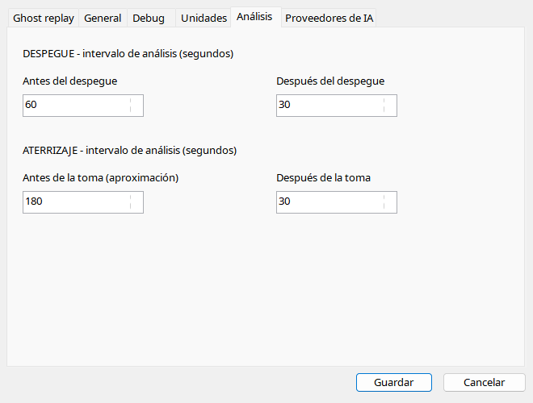

Cuatro campos definen segundos antes/después de despegue y toma independientemente. Ventanas mayores aportan contexto pero aumentan entrada y pueden superar límites. No crean muestras fuera del archivo. Nuevos informes usan el rango nuevo; informes guardados no se reescriben solos.
| Opción / acción | Funcionamiento y limitaciones |
|---|---|
| Antes del despegue | 60 s por defecto, 1–300 antes de liftoff; más contexto de carrera aumenta entrada. |
| Después del despegue | 30 s, 1–300; ascenso inicial, no rendimiento de todo el vuelo. |
| Antes de aterrizar | 180 s, 1–300; ampliar no recupera aproximación no grabada. |
| Después de aterrizar | 30 s, 1–300; carrera y contactos posteriores. |
| Límites | Duración grabada, contexto del modelo y timeout. |
